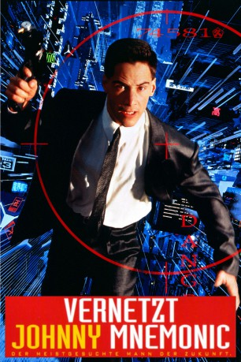

#5370 Vernetzt - Johnny Mnemonic
 
 IMDB-Wertung: 5.6 / 10
IMDB-Wertung: 5.6 / 10  Metascore: 0
Metascore: 0 
Im Jahr 2021 ist die ganze Welt durch das Internet vernetzt, und die Hälfte der Bevölkerung leidet an dem Nerve Attenuation Syndrome. Der Cyberkurier Johnny, der sich einen Speicherchip ins Hirn implantieren lies, bekommt den Auftrag, eine große Menge gestohlener Daten von Beijing nach Newark zu bringen. Pharmakom Industries, die Besitzer der Daten, hetzen ihm eine Horde Yakuzas auf den Hals, während J-Bone, der Anführer der Low-Techs, versucht, die Daten zu entschlüsseln, denn sie sollen die Heilung für NAS enthalten…
Jahr: 1995
Dauer: 96 Minuten
FSK: 18
Land: Kanada Studio: Columbia TriStar FilmTonspuren: DD5.1 - ,
Untertitel:
Auflösung: 1080p (1920x1040) Größe: 6973 MB
Genre: Action, Thriller, Sci-Fi, Krimi
Regisseur: Robert Longo
Drehbuch: Chuck Konzelman
Soundtrack:
Darsteller:
 Keanu Reeves als Johnny Mnemonic
Keanu Reeves als Johnny Mnemonic Dina Meyer als Jane
Dina Meyer als Jane- Ice-T als J-Bone
 Takeshi Kitano als Takahashi
Takeshi Kitano als Takahashi Dolph Lundgren als Street Preacher
Dolph Lundgren als Street Preacher Henry Rollins als Spider
Henry Rollins als Spider Barbara Sukowa als Anna Kalmann
Barbara Sukowa als Anna Kalmann Udo Kier als Ralfi
Udo Kier als Ralfi- Tracy Tweed als Pretty
- Don Francks als Hooky
- Sherry Miller als Takahashi's Secretary
- Jamie Elman als Toad
 Simon Sinn als Man in Hotel Lobby
Simon Sinn als Man in Hotel Lobby- Douglas O'Keeffe als Pharmakom Security Officer
- Coyote Shivers als Buddy
- Michael Scherer als Yakuza Partner
- Christopher Comrie als Beijing Riot Newscaster
- Glenn Bang als Bandleader , uncredited
- Natalie Gray als Tall Chinese Man , uncredited
- Denis Akiyama als Shinji
- Falconer Abraham als Yomamma
- Diego Chambers als Henson
- Arthur Eng als Viet
- Von Flores als Viet
- Victoria Tengelis als Pharmakom Receptionist
- Warren Sulatycky als Yakuza Operator
- Celina Wu als Mikiyo
 Gene Mack als Laslo
Gene Mack als Laslo- Caitlin Carmody als Twin in Hotel Lobby
- Erin Carmody als Twin in Hotel Lobby
- Marlow Vella als Lotek Kid
- Howard Szafer als Strike
- Paul Brogren als Stump
- Arthi Sambasivan als Nurse
- Michael A. Miranda als Stick
- Lynne Adams als Yakuza with Rocket Launcher
- Susan Tsagkaris als Opera Singer
- Robin Crosby als Girl in Hotel Room
Datei: X:\FSK18-1900-1999\Vernetzt - Johnny Mnemonic (1995, FSK18, 1920x1040).mkv seit 21.01.2017
Festplatte: FSK18
 Es gibt insgesamt 108 Filme in der Gruppe 'FSK18-1900-1999'
Es gibt insgesamt 108 Filme in der Gruppe 'FSK18-1900-1999'